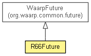

- java.lang.Object
-
- org.waarp.common.future.WaarpFuture
-
- org.waarp.openr66.protocol.utils.R66Future
-
-
Method Summary
-
Methods inherited from class org.waarp.common.future.WaarpFuture
await, await, await, awaitUninterruptibly, awaitUninterruptibly, awaitUninterruptibly, cancel, getCause, isCancelled, isDone, isFailed, isSuccess, reset, rethrowIfFailed, setFailure, setSuccess
-
-
Constructor Detail
-
R66Future
public R66Future()
Copyright © 2009–2018 Waarp. All rights reserved.